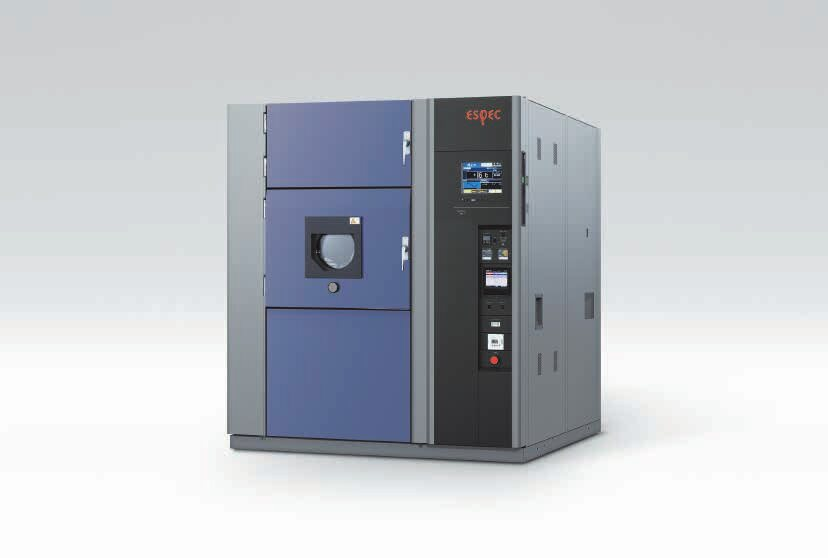
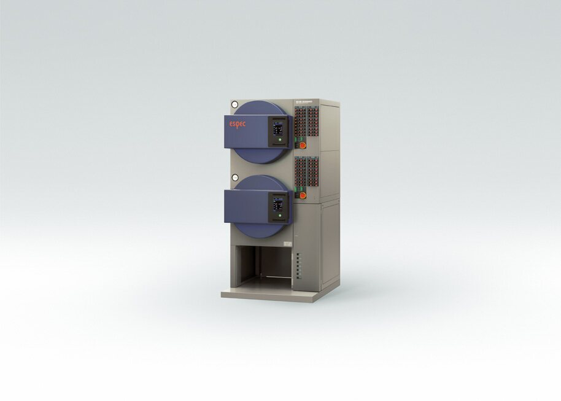

ESPEC 한국 단독 총대리점
열과 습도, 압력까지
시험의 모든 조건을.
1981년부터 45년째, 일본 ESPEC의 환경시험기를 한국에 공급하고 서비스해 왔습니다.

TSA-73ESW410×H460×D370
TSA-203ESW650×H460×D670
고온+60 ~ +200°C
저온-70 ~ 0°C
뜨거운 공기와 차가운 공기를
번갈아 맞게 합니다.
열충격 시험은 시험품에 고온과 저온을 급격히 번갈아 가해 신뢰성을 가늠합니다. IEC 60068-2-14 Na, MIL-STD-883 규격을 따릅니다.
TSA-ES 시험 한 주기
사양표 보기고정 시험 공간
시험품이 움직이지 않아 기계적 충격이 없고, 크고 무거운 시험품에 맞습니다.
정확한 온도 회복
예비 냉각과 예비 가열로 시험품이 들어간 뒤 온도를 빠르게 되찾습니다.
원격 감시
웹 브라우저로 운전 상태를 보고, 점검 시기는 이메일로 알려 줍니다.

TSA시험 공간 40L ~ 300L
화면한국어 지원
TSA 시리즈 대표 모델
| 모델 | 고온 노출 | 저온 노출 | 내부 치수 (mm) |
|---|---|---|---|
| TSA-73ES | +60 ~ +200°C | -70 ~ 0°C | W410×H460×D370 |
| TSA-103ES | +60 ~ +200°C | -70 ~ 0°C | W650×H460×D370 |
| TSA-203ES | +60 ~ +200°C | -70 ~ 0°C | W650×H460×D670 |
| TSA-73EH | +60 ~ +200°C | -70 ~ 0°C | W410×H460×D370 |
| TSD-101-W | +60 ~ +205°C | -77 ~ 0°C | W710×H345×D410 |
TSA-73EH는 고성능형입니다. 출처: ESPEC 제품 페이지.
다른 시험에는
이 장비가 맞습니다.

Platinous J
-70 ~ +100°C, 20 ~ 98%rh
가장 폭넓게 쓰이는 항온항습기
HAST EHS
+105 ~ +162.2°C, 75 ~ 100%rh
고온·고습·가압을 동시에
AR 시리즈
-70 ~ +180°C, 분당 최대 18K
서리 없는 급속 온도 변화
워크인 챔버
-40 ~ +80°C, 4.2 ~ 52.7 m³
사람이 들어가는 시험 공간
기술은 일본에서 배우고,
서비스는 한국에서 합니다.
매년 ESPEC 기술진이 방문해 A/S 기술을 협력하고, 직원은 정기적으로 일본 연수를 받습니다. 해마다 3~4번 ESPEC 연구진 세미나도 엽니다.